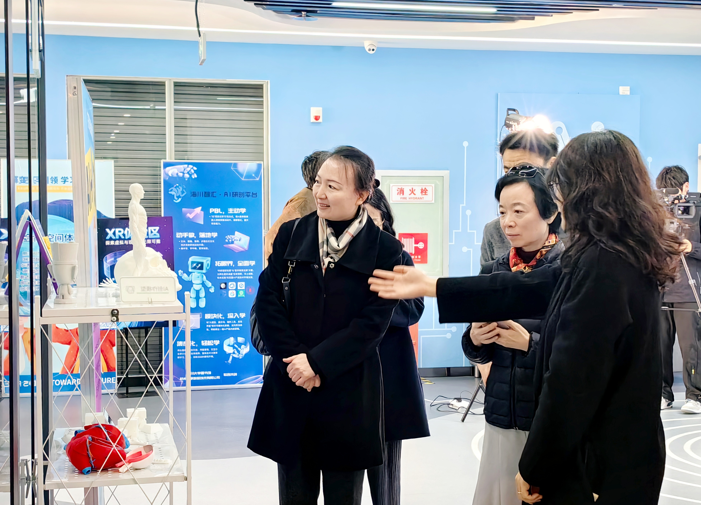

学院通知 · 科研创新
香港大学图书馆杨涛副馆长到访四川大学图书馆调研交流
发布时间：2025-12-24 09:22:19
2025年12月23日上午，香港大学图书馆副馆长杨涛到访四川大学江安校区图书馆，重点参观了图书馆AI素养教育创新实验室并进行座谈交流。四川大学图书馆馆长兰利琼、工会主席韩夏、学习支持中心主任胡琳及相关业务负责人热情接待了来访嘉宾。 杨涛副馆长首先实地参观了江安图书馆AI素养教育创新实验室，亲身体验了实验室的智能教学设施、创新实践区域及相关技术应用场景，直观了解了该实验室在促进学生AI能力培养、支持跨学科合作方面的运作模式与成效。 杨涛副馆长对此行的热情接待表示感谢，并高度赞赏四川大学图书馆在AI赋能信息素养教育领域的前瞻布局与扎实工作。围绕本次调研的核心关切，杨涛副馆长分享了香港大学图书馆在相关领域的思考与实践，交流了图书馆在国际化视野拓展、OA学术资源推广以及图书馆国际营销方面的策略与经验，并就数字化环境下专业馆员队伍的能力构建、发展路径及团队激励等议题进行了深入探讨。 此次交流访问，不仅加深了四川大学图书馆与香港大学图书馆之间的相互了解，更在高校图书馆应对技术变革、拓展国际服务、强化队伍建设等重要议题上实现了有益的思维碰撞与经验互鉴。未来，双方将继续保持沟通合作，共同致力于提升图书馆面向未来学习变革的服务能力，为高等教育事业的发展贡献图书馆的力量。
